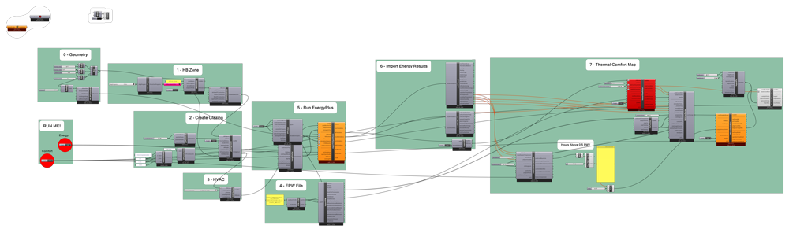

In the middle of May, 2018, I gave presentation on evaluating indoor thermal comfort as part of a workshop organized by
the research project Nordic Built STED - Sustainable Transformation and Environmental Design. The workshop was meant to
give interested parties, architects and engineers alike, an introduction on how to use Grasshopper to make informed
and sustainable design choices. I gave an introduction on how a indoor thermal comfort map can generated and used in
Grasshopper using Ladybug Tools.
The GIF in the beginning is an example of how indoor thermal comfort is affected by the building's geometry. The script can be downloaded here
)
{kind=link}
The script contains a simple energy model setup (group 0 - 5, in the script), followed by the comfort map components. The building is a shoebox model, with a variable overhang, that can be adjusted with a slider from 0 to 2 meters. Group 7 - Thermal Comfort Map (in the script), sets up and computes the comfort map. In this script i use PMV as the comfort metric.
Normally you would compute the average comfort of the room for an entire year. I think it is interesting to see, when you uncomfortable periods - PMV below -0.5 (too cold) or above 0.5 (to warm) - where the uncomfortable zones are located within your room. This enables you to use much more informed and precise measurements to correct it.
In the end I just wanted to thank the workshop participants for a great day and some good questions. And also a big thanks to the other workshop teachers for a good event.